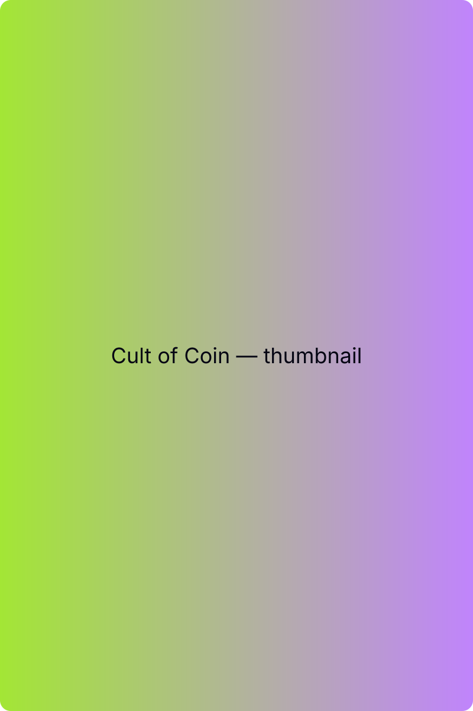

Cult of Coin
A satirical idle clicker that indulges in mindless progression while poking fun at capitalism, ritual, and the way people surrender agency to systems that promise endless growth.

Overview
Cult of Coin is a Unity-based idle game designed to be simple, compulsive, and intentionally mindless. Players tap to generate coins, unlock followers that automate income, and watch numbers grow larger and more abstract over time.
On the surface, it is a short-session idle game meant to be checked for a few minutes, provide some small dopamine hits and jokes, and then be closed. Underneath that surface, it uses satire, exaggerated systems, and religious language to comment on how money and worship blur together in capitalist systems.
This project was built as a fully shippable mobile game and as a way to explore how players interact with compulsion loops, delegation, and progression systems when the optimal play is often to stop actively playing.
Design Goals
- Create an idle loop that is instantly understandable and frictionless.
- Lean into mindlessness as part of the intended player experience.
- Use satire and flavor text to frame familiar idle mechanics.
- Allow imbalance and runaway growth rather than enforcing perfect balance.
- Ship a complete Unity game with ads, saves, and mobile-ready UX.
My Role
I designed and built the game solo, owning both design and implementation:
- Core idle loop and progression structure
- Compounding economy and multiplier systems
- Edict and idol progression concepts
- Mobile UX for short, repeatable play sessions
- Unity implementation in C#, including AdMob integration
- All tone, copy, and satirical flavor content
Core Loop & Progression
The core loop is intentionally familiar:
- Tap a central coin to generate currency.
- Spend coins on followers that generate income passively.
- Upgrade generators and unlock multipliers.
- Ascend to reset progress in exchange for persistent bonuses.
Each ascension accelerates future runs, encouraging short, ritualistic play cycles where players “do their tasks,” watch numbers grow, and move on. The optimal strategy increasingly becomes delegation rather than direct input.
Satire, Compulsion, and Illusory Choice
Many of Cult of Coin’s systems are intentionally framed as choices with minimal long-term impact. Edicts, for example, allow players to make small directional decisions during a run—but are ultimately overshadowed by large, compounding idle income.
This was not treated as a failure of the system, but as part of the satire. The promise of “meaningful choice” exists, but the structure quietly rewards submission to automation and scale instead.
Over time, the game nudges players toward detachment: letting followers work, trusting the system, and returning only to perform the next ritual reset.
Player Behavior & Design Observations
Designing Cult of Coin reinforced how quickly players internalize compulsion loops that are simple and intuitive, even when the interactions themselves are shallow.
- Novelty wears off quickly—as expected in idle games.
- Players default to automation as soon as it becomes efficient.
- Small visual and textual feedback loops sustain engagement longer than mechanical depth alone.
Much of the satisfaction comes not from mastery, but from routine: checking in, making a few upgrades, and leaving again.
Monetization as Design Constraint
Monetization was approached as both a practical requirement and a learning goal. The game uses optional ads (such as doubling offline earnings) paired with a paid option to remove ads entirely.
This structure mirrors many idle games the project draws inspiration from and allowed me to gain hands-on experience integrating monetization systems into Unity without blocking core progression or forcing purchases.
Technical Notes
The game is built in Unity using C#, with systems designed to scale quickly:
- Modular income generators and multipliers
- Data-driven tuning for progression pacing
- Save/load for persistent idle progress
- AdMob integration for rewarded ads and ad removal
Implementing these overlapping systems highlighted how quickly small modifiers compound, and how important clear structure becomes as complexity grows.
Outcomes & Learnings
- Deepened my understanding of compounding systems and runaway growth.
- Reinforced how design can shape player behavior without explicit instruction.
- Provided hands-on experience shipping a mobile Unity project end-to-end.
- Highlighted the tension between agency, automation, and engagement.
Why This Project Matters
Cult of Coin is intentionally a small, silly game—but it represents an important step in my development as a gameplay designer. It reflects a comfort with systems, player psychology, and shipping real products, even when the experience itself is meant to be disposable and light.
While later projects push toward deeper or more expressive systems, this one grounded my understanding of how rules, incentives, and feedback loops shape player behavior at scale.
Interested in this project?
Get in touch to talk about systems design, idle games, or shipping mobile projects.
Contact Me